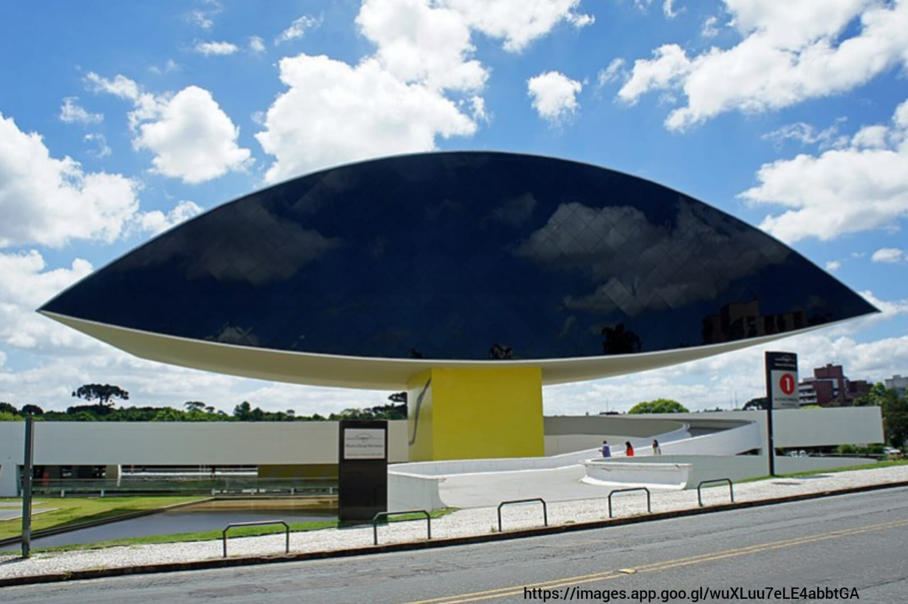

Museu Oscar Niemeyer

O Museu Oscar Niemeyer de Curitiba é uma joia arquitetônica e cultural localizada na capitalparanaense,
conhecida por sua arquitetura moderna e imponente. Inaugurado em 2002, o museu é popularmente conhecido
como "Museu do Olho", devido ao seu formato arrojado e peculiar, que se assemelha a um olho gigante.
A história do Museu Oscar Niemeyer remonta à década de 1960, quando o arquiteto Oscar Niemeyer projetou um edifício para abrigar
o Instituto de Educação do Paraná. No entanto, devido a dificuldades financeiras, o projeto não foi concluído na época. Somente
em 1996, o governo do estado retomou a ideia de criar um espaço cultural e contratou Niemeyer para transformar o projeto inicial
em um museu.
A construção do museu foi um desafio, tanto para o arquiteto quanto para os engenheiros envolvidos. A estrutura suspensa, que
se assemelha a uma grande rampa branca, se destaca por sua elegância e leveza, contrastando com a robustez de sua base vermelha.
O museu é composto por dois blocos: o principal, que abriga as exposições, e o anexo, que abriga a área administrativa e o
auditório.
Ao entrar no museu, os visitantes são recebidos por exposições de arte contemporânea, fotografia, design e arquitetura. O acervo
é diversificado e abrange obras nacionais e internacionais, tanto de artistas consagrados quanto de talentos emergentes. Além
disso, o Museu Oscar Niemeyer também abriga um espaço dedicado à arte popular brasileira, promovendo a valorização da cultura
popular do país.
Ao longo dos anos, o Museu Oscar Niemeyer tornou-se um ícone da cidade de Curitiba, atraindo visitantes de todo o mundo. Sua
arquitetura imponente e exposições de qualidade contribuem para a promoção da cultura e do turismo na região. Além disso, o
museu promove atividades educativas e culturais, como palestras, oficinas e apresentações, tornando-se um espaço de encontro e
aprendizado para a comunidade local.
O Museu Oscar Niemeyer de Curitiba é uma expressão da genialidade do arquiteto Oscar Niemeyer e um símbolo do compromisso de
Curitiba com a valorização da arte e da cultura. Sua história fascinante e seu impacto cultural fazem dele um destino imperdível
para todos os amantes da arquitetura e das artes visuais, proporcionando uma experiência única e enriquecedora.
R. Mal. Hermes, 999 - Centro Cívico, Curitiba - PR, 80530-230
Museu Oscar Niemeyer, endereço